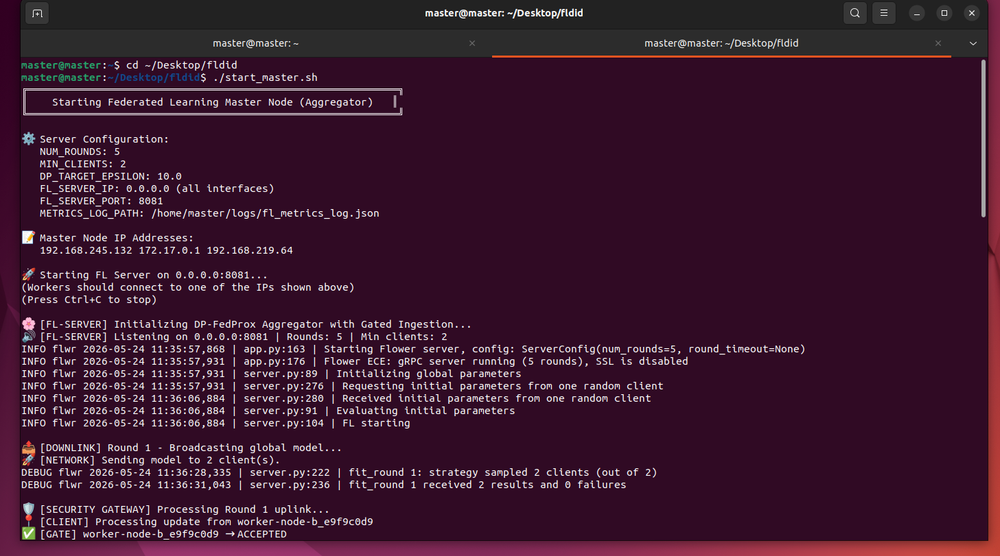
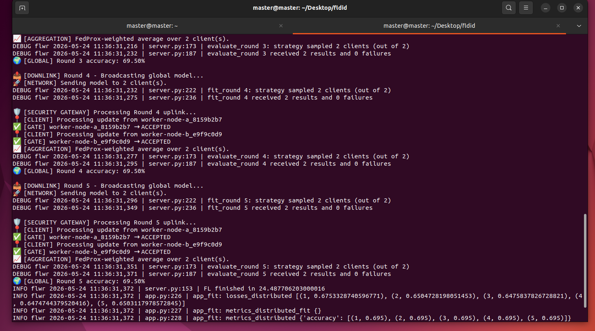
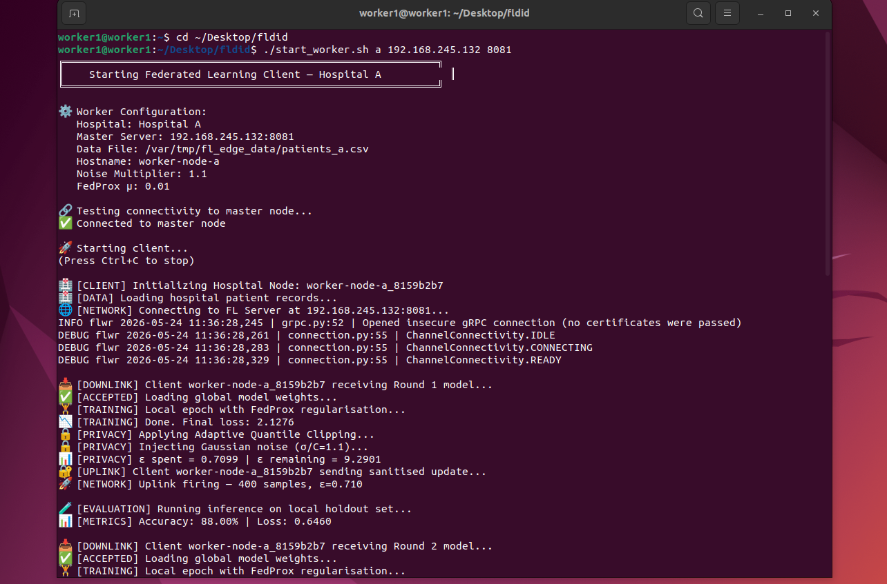
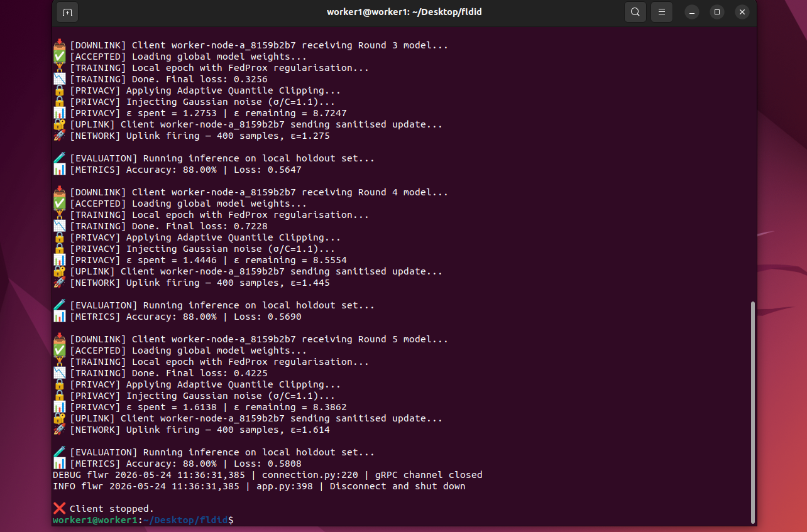
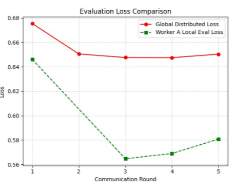
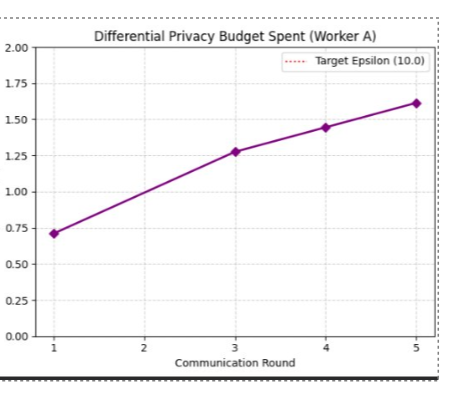
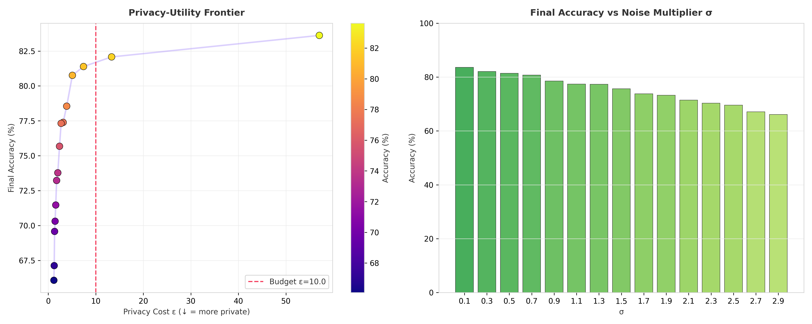
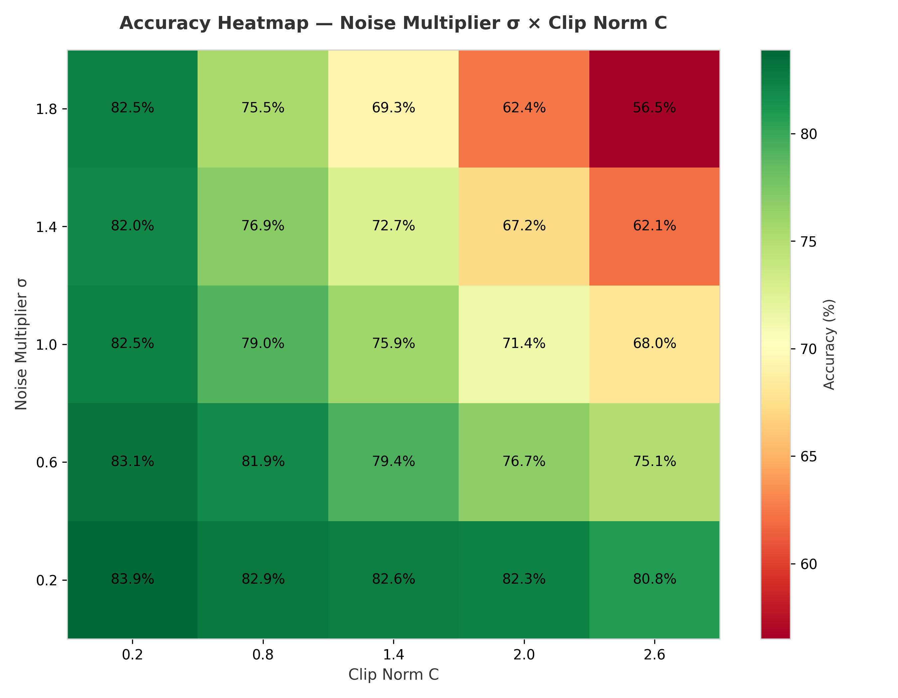

3
Network Slices
A practical 5G Standalone testbed implementing eMBB, URLLC, and mMTC slices with QoS differentiation, subscriber-level policy validation, congestion testing, and slice-level monitoring.
Download Project ReportTraditional fixed-resource network architectures cannot satisfy heterogeneous 5G service demands where high-bandwidth video streaming, latency-critical VoIP, and high-density IoT deployments coexist on one infrastructure.
The project designs and implements three independent 5G slices, eMBB, URLLC, and mMTC, using Open5GS and UERANSIM, then validates QoS differentiation and slice isolation through practical deployment and monitoring.
This project presents the deployment and validation of a 5G network slicing architecture using Open5GS as the 5G Standalone core and UERANSIM as the RAN simulator. Three independent slices are implemented: eMBB for high-throughput video streaming, URLLC for low-latency communication, and mMTC for efficient IoT-style data exchange.
QoS policies are configured per subscriber and verified through Open5GS policy control and MongoDB entries. Successful tunnel creation, slice-specific connectivity, congestion testing, and Prometheus-Grafana monitoring confirm practical service differentiation.


Ubuntu VM provisioning, dependency installation, MongoDB setup, IP forwarding, and NAT configuration.
Open5GS core services are installed and started, including AMF, SMF, UPF, NRF, PCF, UDM, and AUSF.
UERANSIM gNB and UE profiles are configured for registration, authentication, and PDU session establishment.
S-NSSAI values, AMBR policies, and service-specific slices are validated through traffic and monitoring tests.
Open5GS services were deployed as system services and verified through AMF, SMF, UPF, NRF, and PCF startup logs.
Subscribers were configured with IMSI credentials, APN/DNN values, and QoS parameters stored in MongoDB.
eMBB, URLLC, and mMTC slices were mapped to unique S-NSSAI values and tested with separate UE tunnel interfaces.






| Slice | Tunnel | Service | Validation |
|---|---|---|---|
| eMBB | uesimtun0 | Video streaming | High-throughput access validated |
| URLLC | uesimtun1 | Low-latency communication | Latency-sensitive service protected |
| mMTC | uesimtun2 | IoT data exchange | Low-bandwidth service reachable |
The project confirms that S-NSSAI based slice isolation protects latency-sensitive and low-bandwidth traffic even when the eMBB slice is stressed with bandwidth-intensive traffic.
The testbed successfully demonstrates multi-slice 5G deployment using open-source tools. Open5GS provides the standalone core, UERANSIM simulates gNB and UE behavior, MongoDB stores subscriber and QoS profiles, and Prometheus with Grafana gives real-time visibility into slice-level performance.